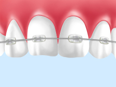

- ホーム
- 小児矯正
口腔機能の正しい発育のため、できるだけ早期に矯正を～小児矯正～
福岡県春日市の歯医者「かすが歯科」では、お子様の顎の発達に合わせて、早期の小児矯正をご提供しています。
かつて矯正治療は、子どもの歯並び・咬み合わせを正しくすることを目的としていました。近年では大人の方の矯正治療も広まってきましたが、大人になってからの治療では、永久歯を抜歯しなくてはならないケースも少なくありません。
小児矯正では、成長期に治療を行うことで顎の正しい成長を導き将来的な抜歯を回避したり、全身の骨格の正しい成長を促したりすることが可能です。もし、現在お子様の出っ歯や受け口など気になる症状がありましたら、ぜひお早めにご相談ください。院長が責任をもって治療にあたります。
矯正が必要な子どもの歯並び
以下でご紹介する歯並びの中で、お子様の歯並びに当てはまるものはありますか？ これらの歯並びである場合、状態に応じて早期の矯正治療を行う必要があります。一度チェックしてみましょう。
受け口・反対咬合 受け口の場合、将来的に顎の成長やお顔の形、咬み合わせなどにも影響を及ぼすことがあります。乳歯の時期にできる治療もありますので、お早めにご相談ください。 |
|
出っ歯 上下の顎の大きさのバランスが悪いと、出っ歯になることがあります。成長期であれば、顎の成長を利用してバランスを整えることも可能です。 |
|
デコボコの歯並び 歯の大きさに対して顎が小さいと、デコボコの歯並びになることがあります。治療開始のタイミングは一人ひとりの年齢や歯並びの状態によって異なりますが、お口のクセが原因になっている場合には早期の改善が必要です。 |
|
すきっ歯 歯と歯の間にすき間がある場合、成長とともにすき間が詰まってくることもあります。しかし舌などにすきっ歯の原因となるクセがある場合、早めに正すことが大切です。 |
小児矯正と成人矯正の違い
小児矯正では、自然な成長の力を利用しながら顎の大きさをコントロールし、永久歯を正しい歯列に導きます。それに対し成人矯正は、すでに生えそろっている永久歯を、完成した骨格の中で並べていきます。
小児矯正は骨格の成長段階から治療を進められるため、よりきれいで正しい歯並び・咬み合わせを得ることが可能です。つまり、より「根本的な矯正治療」といえるでしょう。
子どものうちに矯正治療を始めましょう
子どもの顎の成長は意外に早く、とくに上顎は8歳から10歳ころにはほぼ発育が終わってしまいます。そこで顎の正しい成長を促す小児矯正は、それより早く始めなくてはなりません。一般的な開始時期は6歳前後となり、受け口の場合はさらに早く、4歳ころには取りかかったほうがいいでしょう。
大切なのは、タイミングを逃さないことです。今後の見通しを知るためにも、どうかお早めにご相談ください。
当院の矯正歯科治療
当院に来られるお母様方は、矯正専門医の「様子を見ましょう」という言葉に不安を覚える方が多いように感じます。それに対し当院は、永久歯を抜歯せず矯正することを目指しているため、お母様方のお気持ちに寄り添った、早期の小児矯正が可能です。
当院の小児矯正治療は、子どもの口腔機能の発育を重視することはもちろん、ひいては呼吸機能や睡眠機能も重視しながら進めていきます。矯正専門医任せではなく院長自身がしっかり担当しますので、ご不明点やご不安な点もお気軽にご相談ください。
院長が責任をもって対応します
当院で小児矯正を担当するのは院長自身です。よくある「月に1回来院する矯正専門医」に任せるのとは異なり、「予約が取れない」「虫歯は一緒に治療してもらえない」といったことがありません。
また、日ごろからお子様と接している院長だからこそ、適切なタイミングで矯正治療を開始できます。併せて虫歯の管理やブラッシングのチェックも継続し、お子様のお口まわりの健康をトータルサポート。どうぞ安心してお任せください。
小児矯正治療メニュー
メタルブラケット
もっとも一般的といえる、金属製の小さな装置「ブラケット」を歯の表面に取り付け、ワイヤーを通して歯を動かしていく治療法です。多くの症例に対応でき、比較的費用を抑えられます。
セラミックブラケット

メタルブラケットと同じ構造で、セラミック製のブラケットを用いる方法です。セラミックの色を歯の白さに合わせられるため、目立ちにくくなります。
固定式拡大装置（スケルトン装置/リンガルアーチ）
歯の裏側にワイヤーを固定して、顎の大きさを広げたり、歯を正しい位置に並べたりする治療法です。装置が表から見えないため、見た目が気になることがありません。
MRCトレーナー矯正
「TK4K(R)」というマウスピース型のトレーナー装置を使用して、お口まわりの筋肉のトレーニングをしながら、乱れた歯並びを早期に改善する治療法です。歯並びを乱す原因になる口呼吸や舌のクセなどを改善し、正しい歯並びに導きます。
ブラケットフリー矯正
文字通り、ブラケットを使用しない新しい矯正治療法です。ブラケットの代わりに溶けるチューブを使用してワイヤーを歯に固定し、歯を動かしていきます。ブラケットよりも出っ張りが少ないため目立ちにくく、不快感も軽減されます。
症例紹介
ご家族の方へ
お子様には「爪を咬む」「指しゃぶりをする」「タオルを咬んで寝ている」「勉強するとき鉛筆をくわえる」などのクセはありませんか？ このようなクセ、実は顎の骨に影響を与え、歯並びを乱す原因になることも。
これらのクセは、お子様自身はとくに気にせず続けていることがほとんどでしょう。そしてこのような無意識のクセを正してあげるのはご家族の方の役割。正しい歯並びを得るため、日ごろからこのようなクセをしてしまっていないか気にかけてあげましょう。もちろん、気になることがあれば当院までお早めにご相談ください。